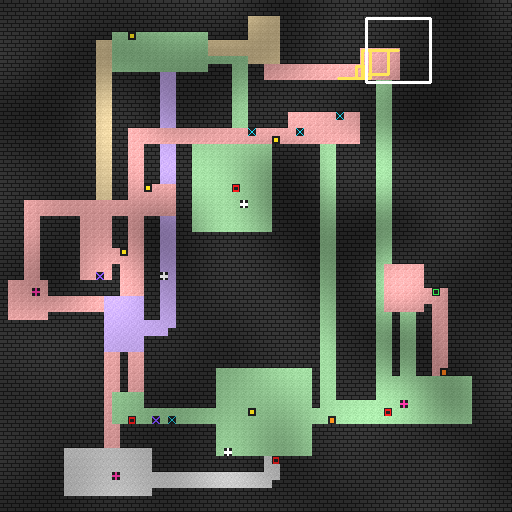
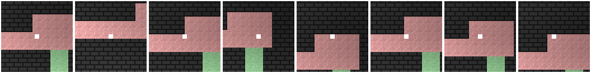

Big pretrained world models give you no ground truth, so drift and memory can only be judged by eye. So I built a 2D world where every generated frame decodes back to the exact map, and trained 22M-parameter world models on it from scratch on one GPU overnight. Then I borrowed the weather forecasters' playbook to see how they fail.
Best of all models for the first 16 frames. By frame 350 it gets only 15% of cells right, even when the agent stands still and every cell is known.
Re-noise the model's own past frames slightly (0.1) and it reproduces the world exactly for 384 frames, 12× its training window. With clean context the same model drifts.
Teacher forcing dissolves into invalid texture. Clean-context diffusion forcing draws perfectly valid tiles of the wrong world. Realism metrics rank that failure as the better one; the weather-style "climate" metric doesn't.
Each world is a procedurally generated 64×64-tile map of rooms, corridors and landmark glyphs, under smooth lighting. The model only ever sees a 64×64-pixel window centred on the agent (the white box), so places scroll out of view and come back. That keeps the look-away-and-return problem of the 3D models.
Because tiles come from a fixed atlas, any generated frame can be decoded back to tile ids at a known pose. That gives exact accuracy against the true map, plus an off-manifold rate for cells that match no tile at all. The renderer makes about 400,000 frames per second on the GPU, so training data is generated on the fly and evaluation uses 200 maps the model never saw.


Two copies of the same 22M-parameter model, same data, 3.5 h each. Teacher forcing always predicts the next frame from clean, real history. Diffusion forcing gives every frame its own noise level during training, so it learns to work from imperfect history. Each rollout starts from 31 real frames, then the models generate 384 more on their own while the agent stands still, paces back and forth, or walks. Standing still and pacing never leave the area the real context showed, so every cell has a known right answer.
Same U-shape as Matrix-Game 2.0's context-noise knob in the first report, now measured against ground truth. Diffusion forcing is best at a small nonzero context noise (0.1–0.2) and worse at 0 and at 0.4. Teacher forcing never saw noisy context, so any noise hurts it at once.
ML weather models separate weather skill (getting tomorrow right) from climate (keeping the long-run statistics right after the forecast has lost the details). I applied the same split here. Weather is skill on cells the context determined, against chance. Climate is whether the regions a model invents have the map generator's statistics: 2×2 wall/floor/landmark patterns, compared with real frames by Jensen-Shannon divergence. A literature sweep found neither split used for action-conditioned world models.
Teacher forcing fails off the manifold. Up to 35% of its late cells match no tile. A truth-free "snap" (every 8 frames, replace each cell with its nearest tile) pulls it back: final skill goes from 0.00 to 0.27 and the climate error halves. This is the failure class the weather-ML Thermalizer was built for.
Clean-context diffusion forcing fails on the manifold. Only 6–8% of its cells are invalid, yet its climate is the worst of all: it settles into near-uniform frames, a decodable version of Matrix-Game 2.0's darkness attractor. Snapping does nothing for it; context noise fixes it.
So a realism metric would call clean-context diffusion forcing the healthier model, and climate says the opposite. It also flags trouble early: climate error passes the noise floor while weather skill is still high.
| arm | skill, last bin | climate JSD, last bin | off-manifold | spread vs error ρ |
|---|
The plan predicted that a one-step contraction test (does a model damp a small Gaussian perturbation of its context?) would predict which models survive long rollouts, as it does for weather emulators. It doesn't. Told the context is clean, diffusion forcing amplifies Gaussian noise (gain 1.57) and teacher forcing damps it (0.27), yet teacher forcing collapses first. An on-manifold perturbation does order them correctly: after a one-tile shift of the last context frame, diffusion forcing recovers (95.6% accuracy vs 98.6% unperturbed) while teacher forcing copies the shift (85% vs 100%). That revised claim needs more than two model families to stand.
Code, configs, raw numbers and pre-registered hypotheses: experiments/2026-11-23-gw-drift-df-vs-tf, 2026-11-24-gw-weather-climate-eval, 2026-11-23-gw-memory-equal-compute; decisions in docs/decisions/0001 and 0002.